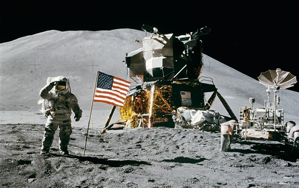
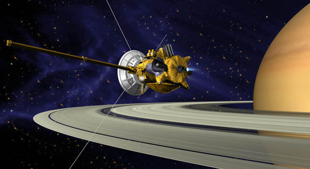
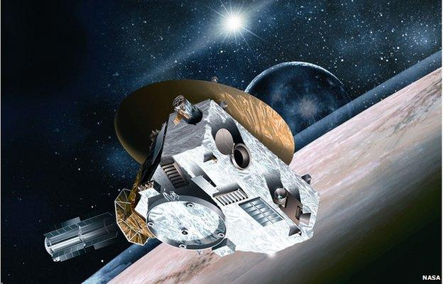
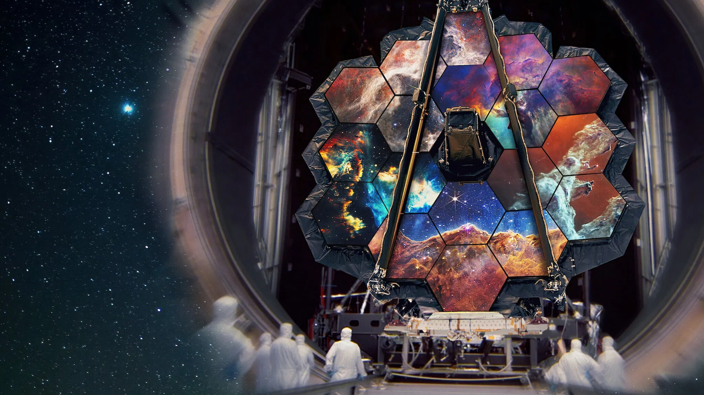
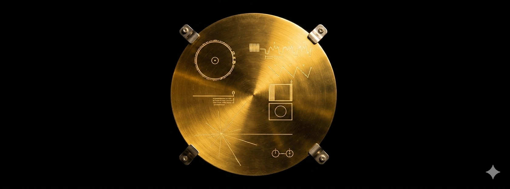

🎬 Відеозвіт: Artemis II
Цей плеєр використовує захищений канал YouTube-NoCookie, що дозволяє відтворювати контент без зайвих скриптів відстеження. Це допомагає обійти стандартні блокування в деяких браузерах при локальному перегляді.
Від перших кроків на Місяці до пошуку життя на Марсі. Технічний огляд найважливіших експедицій NASA за всю історію.
Цей плеєр використовує захищений канал YouTube-NoCookie, що дозволяє відтворювати контент без зайвих скриптів відстеження. Це допомагає обійти стандартні блокування в деяких браузерах при локальному перегляді.

Чому це зробили: Місія була відповіддю на виклик президента Кеннеді у розпал Холодної війни. Основна мета — випередити СРСР у "місячних перегонах" та довести технологічну перевагу США, продемонструвавши можливість безпечної посадки людини на Місяць і повернення її на Землю.
Що там було: 20 липня 1969 року Ніл Армстронг та Базз Олдрін посадили модуль "Eagle" у Морі Спокою. Вони провели на поверхні 2.5 години, зібрали 21.5 кг зразків ґрунту та встановили наукове обладнання (сейсмометр та лазерний відбивач). Ця місія довела, що людина може працювати в умовах іншої гравітації.

Чому це зробили: Сатурн та його супутники (особливо Титан) вважалися ключем до розуміння еволюції ранньої Сонячної системи. Вченим було необхідно зрозуміти природу кілець та перевірити, чи існують умови для життя в підлідних океанах супутників.
Що там було: Апарат пропрацював 13 років на орбіті Сатурна. Він відкрив гейзери на Енцеладі та висадив зонд Huygens на поверхню Титана — це була перша в історії посадка у Зовнішній Сонячній системі. Дані з Cassini повністю змінили наше уявлення про газові гіганти та можливість існування життя на супутниках-океанах.

Чому це зробили: Плутон залишався останньою "недослідженою" планетою (на момент старту). Місію відправили, щоб вивчити Пояс Койпера — регіон замерзлих об'єктів, які збереглися в незмінному вигляді з часів народження Сонця.
Що там було: Апарат став найшвидшим об'єктом, запущеним з Землі. У 2015 році він пролетів повз Плутон, зробивши знімки знаменитого "серця" (рівнини Супутника). Виявилося, що Плутон — геологічно активний світ з азотними льодовиками та складною атмосферою, а не просто мертва крижана скеля.

Чому це зробили: Hubble не міг бачити найперші зірки, бо їхнє світло через розширення Всесвіту змістилося в інфрачервоний діапазон. Webb створили, щоб зазирнути у "темні віки" космосу та побачити формування перших галактик через 13.5 млрд років після Великого вибуху.
Що там було: Найскладніше розгортання в історії. Телескоп має величезне дзеркало з берилію, вкрите золотом, і сонцезахисний екран розміром з тенісний корт. Він знаходиться у точці Лагранжа L2 за 1.5 млн км від Землі. Зараз він аналізує атмосфери екзопланет на наявність води та метану.
Місії NASA — це не тільки залізо в космосі, а й гігантські наземні антени. Мережа DSN дозволяє підтримувати зв'язок з апаратами на відстані понад 20 мільярдів кілометрів.
Сигнали з дального космосу настільки слабкі, що антени мають бути охолоджені майже до абсолютного нуля, щоб власні шуми електроніки не "заглушили" повідомлення від зонда.

На борту апаратів Voyager 1 та 2 закріплені позолочені мідні диски. Це своєрідна "капсула часу", призначена для будь-яких космічних мандрівників, які можуть знайти зонди в майбутньому.
Що на ній: 115 зображень Землі, звуки природи, музика (від Баха до Чака Беррі) та привітання на 55 мовах. На обкладинці вигравіювана інструкція з читання диска та мапа положення Сонця відносно пульсарів.